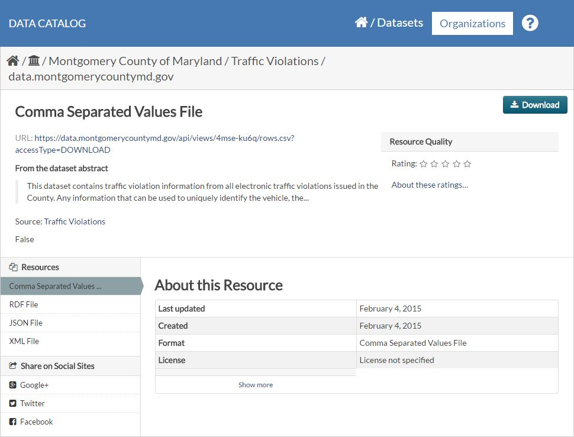

Data.gov has a catalog of over a 160,000 data sets that are a vailable for anyone to work with. The state Maryland contributed a collection of traffic violation data. This data looked like it would be a useful tool to shed light o n a commonly held belief, that more tickets are issued at the end of the month in order for officers to 'meet quota'. The MD Traffic Data did s hed light on that question, but it also raised a few more.
19 20Data.gov provides a little information about each dataset. In this case the CSV file reportedly "contains traffic violation information from all electronic traffic violations issued in the County".
22 
23